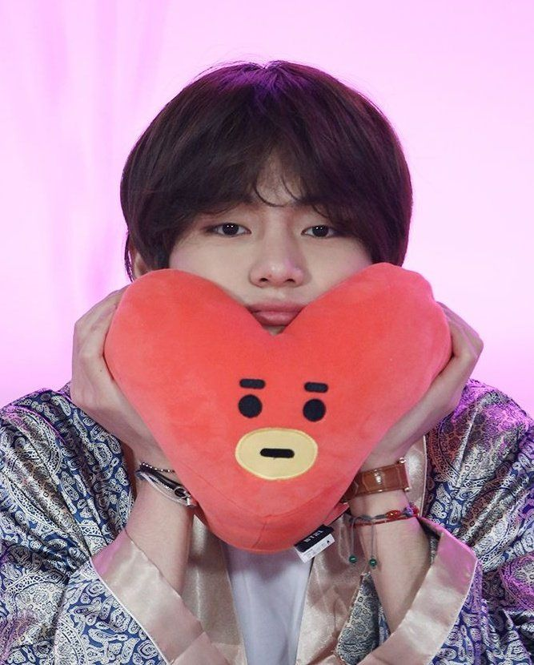

Nome verdadeiro: Kim Tae-hyung (김태형).
Cidade natal: Daegu, Coreia do Sul.
Data de nascimento: 30 de dezembro de 1995.
No BTS: vocalista, compositor, produtor e dançarino
Tata, criado por Taehyung, é um extraterrestre e príncipe herdeiro do planeta BT. O alienígena possui um corpo azul, lotado de bolinhas amarelas e uma cabeça em formato de coração. Além disso, o personagem conta com poderes sobrenaturais e um corpo superelástico, que permite seus membros de se estenderem a grandes distâncias. De acordo com V, ele já havia desenhado a figura antes e queria que o personagem fosse mais único do que fofo, já que ele ama personagens únicos.
Kim Tae-Hyung (김태형), também conhecido como V, é um cantor e ator sul-coreano da Big Hit Entertainment. Ele alcançou a fama como um dos membros da sensação mundial BTS. Quando ele tinha apenas quinze anos, V acompanhou seu amigo para um teste na Big Hit Entertainment. Ele estava lá apenas para apoiar o amigo, mas um executivo o notou e o incentivou a fazer um teste. Como V não tinha planos de fazer um teste, ele teve que ligar para seus pais para pedir permissão. Ele acabou passando no teste e se tornou um trainee oficial.